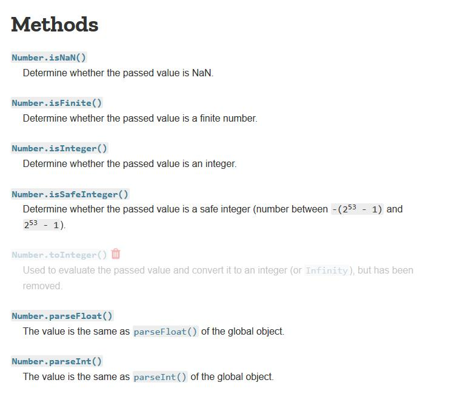

Σε αυτή την ενότητα θα δούμε τα primitive data
types και ποιο συγκεκριμένα τα numbers. Κάθε μεταβλητή
που χρησιμοποιούμε στην JavaScript θα περιέχει δεδομένα που
θα ανήκουν σε μια από τις πιο κάτω κατηγορίες:
- Number: Σε αυτή την κατηγορία ανήκουν οι ακέραιοι αλλά και οι δεκαδικοί αριθμοί.
- String: Αποτελείται από οποιαδήποτε αριθμό χαρακτήρων
- Boolean: Οι μόνες πιθανές τιμές που μπορούμε να έχουμε είναι true ή false
- Undefined: Όταν προσπαθούμε να διαβάσουμε μια μεταβλητή που δεν
υπάρχει ή υπάρχει αλλά δεν έχουμε ορίσει μια αρχική τιμή,
τότε το αποτέλεσμα είναι undefined.
- Null: Αυτό είναι ένα ειδικό είδος στοιχείου που
έχει αποκλειστικά και μόνο μια τιμή – null. Η διαφορά ανάμεσα με
το undefined είναι ότι μια μεταβλητή που ισούται με null
έχει αρχικοποιηθεί απλά η αρχική της τιμή είναι null. Θα δείξουμε
την διαφορά λίγο πιο κάτω στα παραδείγματα που θα αναλύσουμε.
Κάθε άλλη τιμή που δεν ανήκει σε μια από τις πιο πάνω
κατηγορίες σημαίνει ότι είναι αντικείμενο (object).
Έχοντας λοιπόν την πιο πάνω θεωρία στο μυαλό μας, μπορούμε
να μιλάμε για δύο μεγάλες κατηγορίες στην JavaScript:
- Primitive (με τις 5 κατηγορίες που μόλις αναφέραμε)
- Non-primitive (αντικείμενα – objects)
Σε αυτή την ενότητα θα δούμε μερικά παραδείγματα στα number
primitives. Αλλά πριν φτάσουμε σε αυτό το σημείο, ας
λύσουμε πρώτα μια άλλη απορία που ίσως ήδη σκέφτεστε –
πως μπορώ να γνωρίζω τι είδος τιμής έχει μια μεταβλητή ή
αλλιώς ποιο είναι το data type της μεταβλητής?
Η απάντηση έρχεται από έναν operator που ονομάζεται
typeof και όταν το καλούμε επιστρέφει το όνομα της κατηγορίας
στην οποία ανήκει η μεταβλητή. Οι πιθανές απαντήσεις που μπορούμε
να πάρουμε από τον typeof τελεστή είναι οι ακόλουθες:
- number
- string
- boolean
- undefined
- object
- function
Ας ξεκινήσουμε λοιπόν να βλέπουμε μερικά παραδείγματα
που περιέχουν αριθμούς με τον πιο απλό παράδειγμα
να είναι εκείνο που χρησιμοποιεί ακεραίους αριθμούς.
MyScript.js
var a = 1;
document.writeln(typeof a);
document.writeln('</br>');
a = 1234
document.writeln(typeof a);
output
number
number
Παρατηρήστε ότι την δεύτερη φορά που αναθέσαμε την τιμή 1234
στην μεταβλητή a δεν χρειάστηκε να χρησιμοποιήσουμε την λέξη
var μια και η μεταβλητή έχει ήδη οριστεί επίσημα μια φορά.
Φυσικά και οι αριθμοί εκτός από ακεραίους μπορεί να είναι και δεκαδικοί.
MyScript.js
var a = 1;
document.writeln(typeof a);
document.writeln('</br>');
a = 1234;
document.writeln(typeof a);
var b = 1.23;
document.writeln('</br>');
document.writeln(typeof b);
output
number
number
number
Αξίζει επίσης να σημειώσουμε το γεγονός ότι στην JavaScript
μπορούμε να ορίσουμε και Octal όπως και hexadecimals αριθμούς.
Όταν ο αριθμός ξεκινάει με μηδέν (π.χ. 0776) τότε αυτός θεωρείται
octal αριθμός ενώ όταν ξεκινάει με 0X τότε θεωρείται hexadecimal.
Το αποτέλεσμα όμως παραμένει number για τον typeof τελεστή.
Επίσης έχουμε και δυαδικούς αριθμούς που με την έκδοση ES6
της JavaScript μπορούμε να προσθέσουμε 0B μπροστά από τον
αριθμό (π.χ. 0B1111).
Υπάρχει μια ειδική τιμή που μπορεί να πάρει μια μεταβλητή και
ονομάζεται Infinity. Το Infinity αντιπροσωπεύει έναν αριθμό
που είναι πολύ μεγάλος σε μέγεθος και κατά συνέπεια αδυνατεί
η JavaScript να τον χειριστεί. Ένας αριθμός με περισσότερα από
309 μηδενικά (η ψηφία) θα μας επιστρέψει Infinity όταν προσπαθήσουμε
να το εκτυπώσουμε στην οθόνη μας ενώ στο typeof έλεγχο όπως δείχνει
και το πιο κάτω παράδειγμα θα πάρουμε number σαν αποτέλεσμα που είναι
σωστό γιατί το Infinity είναι κατά βάση αριθμός. Όπως επίσης θα πάρουμε
Infinity όταν διαιρέσουμε οποιονδήποτε αριθμό με το μηδέν.
MyScript.js
var a = 1e309;
document.writeln("More than 309 digits in a number give: ");
document.writeln(a);
document.writeln(" in the result");
document.writeln('</br>');
var b = 6 / 0;
document.writeln('</br>');
document.writeln("Dividing by zero gives us: ");
document.writeln(b);
output
More than 309 digits in a number give: Infinity in the result
Dividing by zero gives us: Infinity
Για να ολοκληρώσουμε το πιο πάνω παράδειγμα,
θα πρέπει επίσης να πούμε ότι οποιαδήποτε πράξη με το
Infinity μας δίνει Infinity σαν αποτέλεσμα.
MyScript.js
var a = 1e309;
document.writeln("More than 309 digits in a number give: ");
document.writeln(a);
document.writeln(" in the result");
document.writeln('</br>');
var b = 6 / 0;
document.writeln('</br>');
document.writeln("Dividing by zero gives us: ");
document.writeln(b);
document.writeln('</br>');
var c = Infinity * 20;
document.writeln('</br>');
document.writeln("In any arithmetic operation, if one operand is Infinity then the result is ");
document.writeln(c);
output
More than 309 digits in a number give: Infinity in the result
Dividing by zero gives us: Infinity
In any arithmetic operation, if one operand is Infinity then the result is Infinity
Μέχρι τώρα έχουμε δει πως το Infinity είναι ένα είδος
αριθμού. Όμως υπάρχει και ένα άλλος αποτέλεσμα που υπάρχει
πιθανότητα να πάρουμε σαν αποτέλεσμα του typeof τελεστή και
αυτό είναι το NaN (Not a Number). Παίρνουμε NaN σαν αποτέλεσμα
όταν προσπαθούμε να κάνουμε αριθμητικές πράξεις αλλά η διαδικασία
αποτυγχάνει όπως π.χ. όταν πολλαπλασιάζουμε τον αριθμό 10
με τον χαρακτήρα “a”.
Αν τώρα θέλουμε να γνωρίζουμε εξ αρχής ποια είναι η
κατάσταση της τιμής μια μεταβλητής, μπορούμε να
καλέσουμε την μέθοδο Number.isFinite( ) στην έκδοση
ES6 της JavaScript ενώ με την προηγούμενη έκδοση ήταν η μέθοδος isFinite( ).
Η διαφορά μεταξύ τους είναι ότι η isFinite( ) προσπαθεί να αλλάξει
την τιμή της μεταβλητής που ελέγχει σε αριθμό (κάνει casting) πριν
την αξιολογήσει ενώ η Number.isFinite( ) δεν κάνει μετατροπή οπότε
είναι και πιο ακριβής στα αποτελέσματα που παράγει.
MyScript.js
var a = 1e309;
document.writeln("More than 309 digits in a number give: ");
document.writeln(a);
document.writeln(" in the result");
document.writeln('</br>');
document.writeln(Number.isFinite(a));
var b = 6 / 0;
document.writeln('</br>');
document.writeln("Dividing by zero gives us: ");
document.writeln(b);
document.writeln('</br>');
document.writeln(Number.isInteger(a));
document.writeln('</br>');
var c = 10 * 'a';
document.writeln('</br>');
document.writeln("The result is: ");
document.writeln(c);
output
More than 309 digits in a number give: Infinity in the result
false
Dividing by zero gives us: Infinity
false
The result is: NaN
Πριν κλείσουμε την ενότητα ας αναφερθούμε και σε δύο ακόμα
μεθόδους που μας βοηθάνε να αξιολογήσουμε την τιμή μιας
μεταβλητής: Number.isNaN( ) και Number.isInteger.
Number.isNaN – αξιολογεί αν η τιμή μιας μεταβλητής
είναι αριθμός ή όχι χωρίς να χρειαστεί να κάνει casting πριν τον έλεγχο
όπως έκανε η πιο παλιά μέθοδο isNaN( ).
Number.isInteger – επιστρέφει true εάν
ο αριθμός δεν είναι το άπειρο και δεν περιέχει δεκαδικά ψηφία δηλαδή
είναι καθαρά ακέραιος.
Ας δούμε ένα παράδειγμα που χρησιμοποιεί τις πιο πάνω μεθόδους
MyScript.js
document.writeln(Number.isNaN('test'));
document.writeln('</br>');
document.writeln(Number.isNaN('123'));
document.writeln('</br>');
document.writeln(Number.isInteger('test'));
document.writeln('</br>');
document.writeln(Number.isInteger(123));
document.writeln('</br>');
output
false
false
false
true
Για περισσότερες πληροφορίες και λεπτομέρειες γύρω
από αντικείμενο Number μπορείτε να βρείτε στο site
του Mozilla :https://developer.mozilla.org/en-US/docs/Web/JavaScript/Reference/Global_Objects/Number .

Michail Kassapoglou Admin
Γεια σας, είμαι ο Μιχάλης Κασάπογλου και θα σας διδάξω με τον ποιο απλό
τρόπο να προγραμματίζετε σε JavaScript. Ασχολούμαι με την τεχνική εκπαίδευση
σε διάφορες πλατφόρμες, λειτουργικά συστήματα και γλώσσες προγραμματισμού
πάνω από 20 έτη. Κατέχω έναν αρκετά μεγάλο αριθμό πιστοποιήσεων Microsoft και Oracle
και σαν Τraining Lead στην Intrasoft έχω την δυνατότητα να αναβαθμίζω συνεχώς
τις γνώσεις μου και να έχω άμεση επαφή με αληθινά projects και εξειδικευμένες μεθόδους
ανάπτυξης εφαρμογών που έχουν υψηλές απαιτήσεις.
Για τυχόν ερωτήσεις σας μπορείτε να επικοινωνήσετε μαζί μου
στο Michail.Kassapoglou@gmail.com
Σας ευχαριστώ που επισκεφτήκατε την ιστοσελίδα μου.